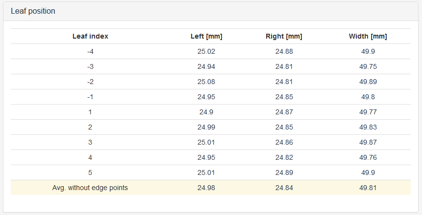
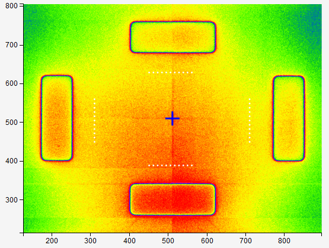

Field size module¶
This module can be used to measure the coincidence of mechanical and radiation isocenters, as well as to measure the positions of MLC leaves and jaws.
Note
The module is not part of Pylinac, but it uses Pylinac’s methods. It has a deficiency: the lateral positions of MLC edges are not accurate because non-radiation (mechanical) edges are assumed.
Options¶
- Image 1
The image that determines the location of the mechanical isocenter. The image should contain one of the following: a square field, the BB, Elekta plate.
- Image 2
The image you wish to analyze.
- MLC type
Pick the right MLC leaves. This option defines the lateral spread of MLC sampling points. Note that the lateral spread uses physical dimensions of leaves, not radiation dimensions.
- MLC direction
Leaves can be in the left-right or up-down direction.
- Center
The method to define the mechanical center. It is applied to the first image.
- Clip box
The size of the central portion of the image beyond which pixel values will be set to background signal. If you don’t want to clip the image, put 0.
- MLC points
The number of sampling points for each MLC leaf. Minimum values is 1.
- Jaw points
The number of points to sample jaws. Points are evenly spread.
- mmpd
Millimeter per dot. Only works if Plate is not chosen for Set center. If you wish Pylinac to determine the mmpd from dicom tags, leave the value at 0.
- CAX point
If Manual is chosen for Set center, this options allows to define the position of the mechanical center in pixels. The origin is in the bottom left corner of the image.
- Invert image?
Check this if you want to invert the image. This option should not be necessary because Pylinac will check for proper inversion.
- High contrast (kV) images?
Check this if you want to force the BB finding algorithm to assume that the image is of high contrast. Like a kV image. It should be possible to measure kV fields with this module.
How to use the module¶
The module needs two images. The first image is used to determine the location of the mechanical isocenter. Since we will not move the EPID while measuring, the position of the mechanical isocenter as seen by the EPID will not change, hence the pixel position of the isocenter can be transferred from the first image to the second. The second image is a field of arbitrary size, it does not have to be square. Both images must belong to the same series. Try to have the field central on the EPID as well as at the right angle. Presence of couch in the beam should not cause problems.
The first image can be:
A simple square field without any markers. In this case we will tell the software that we will use the field CAX as the mechanical isocenter.
An image of Elekta’s Agility calibration plate accurately aligned to the optical crosshair.
An image of the BB aligned with the mechanical isocenter.
Any image of a metal marker that shows the location of the mechanical isocenter. The location of the marker can be determined manually with the mouse pointer and then entered into the software for recalculation. You may leave the marker in place when acquiring subsequent images.
Opposing coll angle field. This is just a quick way of measuring collimator asymmetry by having the first and second image the same field with opposing collimator angles.
When acquiring images, make sure that the field is at least 1 cm away from the edges of the image.
Using CAX¶
Acquire an image of a simple square field, say 10 cm x 10 cm that you know is well centered around the mechanical isocenter.
Acquire an image of a field you would like to measure, say 5 cm x 5 cm.
Set first image as Image 1, and second image as Image 2. For Set center use CAX. If you wish to use your own pixel size, you can enter it into mmpd. Also, set your MLC orientation.
The CAX point will be transferred from the first image to the second as the “mechanical isocenter”.
Using BB¶
Acquire an image of the BB. The BB should be well aligned to the mechanical isocenter (optical crosshair). You can use any field size.
Acquire an image of a field you would like to measure, say 5 cm x 5 cm. The presence of BB in the image should not influence the analysis much, unless the BB is on a thick holder.
Set the first image as Image 1, and the second image as Image 2. For Set center use BB. If you wish to use your own pixel size, you can enter it into mmpd. Also, set your MLC orientation.
The center of the BB will be transferred from the first image to the second as the “mechanical isocenter”.
Using Plate¶
Acquire an image of Elekta’s plate. Accurately align the plate with the optical crosshair. Make sure that the optical crosshair is almost perfectly centered. After the plate is set, use a field size of 24 cm x 24 cm and 10-20 MU to make the image.

Acquire an image of a field you would like to measure, say 5 cm x 5 cm. It is possible to measure this field without removing the plate, but for larger fields it is recommended to remove the plate.
Set the first image as Image 1, and the second image as Image 2. For Set center use Plate. Set your MLC orientation.
The image of the plate will be analyzed and the center of it will be transferred to the second image as the “mechanical isocenter”. Also, from the size of the cut-outs in the plate, mmpd will be determined and used instead of SID.
Using Manual¶
Put a small metal marker on the optical crosshair. Acquire an image of it.
You can leave the marker on and just acquire more interesting images of various fields.
Set the first image as Image 1, and the second/third… image as Image 2. For Set center use Manual. Leave the CAX point as it is (510). Click Analyze.
Find the marker on the image and zoom in. With the mouse pointer go to the center of the marker and read the horizontal and vertical pixel position (shown in red square below). Enter the values into CAX point. Click Analyze once more.
Using Opposing coll angle¶
Similar to CAX, except that the first and second image contain the same field but with opposing collimator angles. The CAX of the first field will be taken as the mechanical isocenter.
Results¶
To determine leaf and jaw positions the image is sampled horizontally and vertically with multiple profiles. If MLC orientation is set to “X”, then horizontal profiles will be clustered for each leaf, and vertical profiles will be evenly spread to find jaw edges. Lateral leaf dimensions are predefined. Say, for example, Elekta_160 is chosen for MLC type. Then the leaf edges are distributed in the pattern: 0, -+5 mm, -+10 mm, -+15 mm, -20 mm … -+200 mm. The number of profiles that are used to get the position of one single leaf is set with MLC points. If 3, then each leaf will be sampled with 3 profile lines. The final result for each leaf position is an average over the points that were defined for leaf sampling.
In the direction perpendicular to leaves profiles are extracted equidistantly. Their number is set with the parameter “Jaw points”.
The profile edge is determined with the 50 % penumbra point. The average size of the field is calculated as the average over all points excepts the first and the last jaw point, and the first and the last leaf which may be a bit off.
Field rotation can only be calculated for large fields with small collimator rotation. You can use it to check your collimator angle calibration if you trust the EPID orientation. Or vice versa. It is calculated simply from the slope of four lines fitted to the edges of the field.

Radiation center offset from mechanical center is the difference in position between the mechanical center defined by the first image and the CAX from the second image. It is defined at the isocentric plane.
If you are using the plate to determine the mechanical isocenter, note the following. The plate has four windows cut out. Each window is well centered with respect to the markings on the plate, and has a width of 2 cm. This allows to accurately find the central point as well as pixel size at the isocenter.
Yellow dots on the picture of the plate show where the windows are sampled for horizontal/vertical inner penumbra points.
Expected field width and the tolerance are defined in administration. Three field sizes can be predefined.
A note on colors¶
Violet cross and line: the center of field CAX and the 50-% isodose line.
Blue cross: the mechanical center.
Blue and red dots: MLC positions.
Green and yellow dots: penumbra points where jaws are sampled.
Red contour around BB: the region within which the BB is sought.
What you should know¶
So far I have not had the time to find a better way to define the latter spread of sampling points for MLC leaves. You will notice, if you shape an irregular field, which you can also analyze btw, that the script tends to miss the leaves as you move out from the isocenter. This will be fixed in future versions.
Warning
Also note that leaf and jaw positions are determined by simple penumbra point searching. Other software may give you a different result.